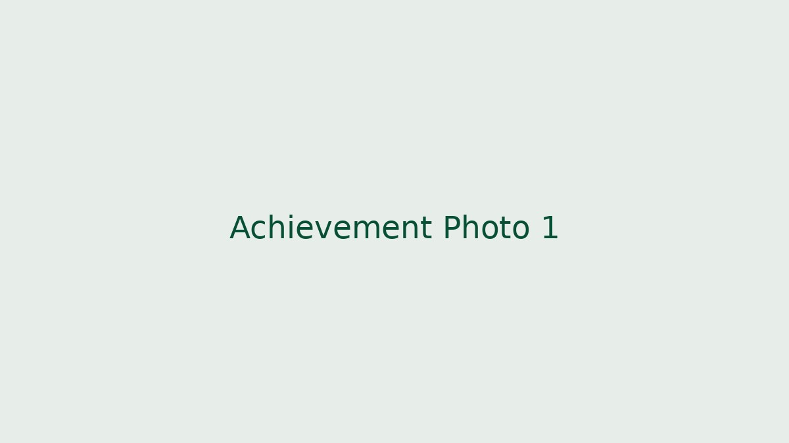
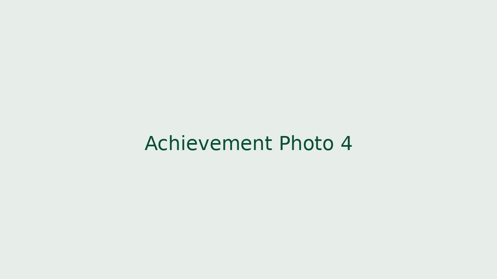

Welcome to JPCS - PTC!
The Junior Philippine Computer Society (JPCS) - PTC is a student organization that encourages learning, connection, and growth in computing and technology.
Explore student activities, accomplishments, and opportunities to be part of our community.
Learn More


